PUFY 1100 A31 Sustainable Systems 12953
Representation → Scale → Time → Connectivity → Observation
Maps are conceptual models
Representation changes relationships
What becomes visible? What disappears?
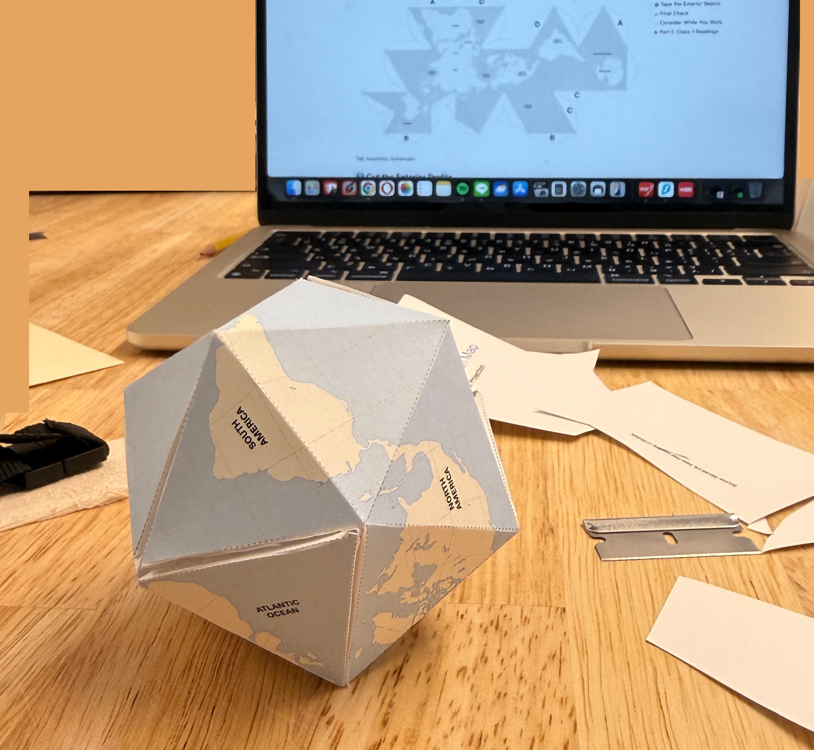
Zoe Su’s Class 1 Model
How does changing scale change what becomes visible?
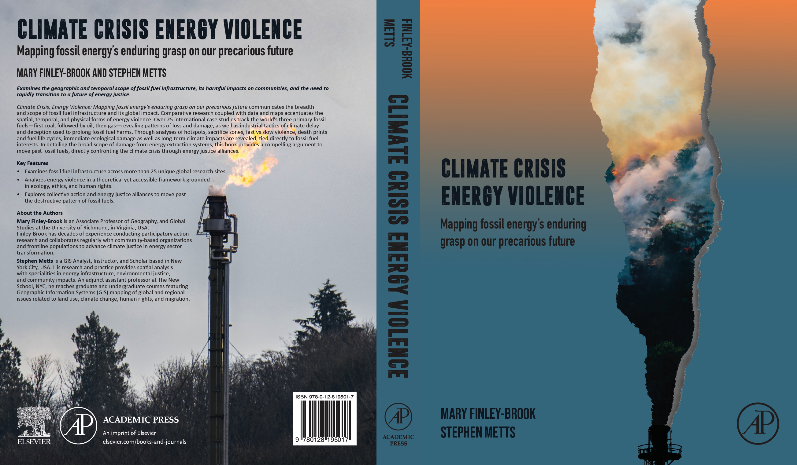
Source: Book Description
Room → Building → Street → City → Region → Continent → Planet
The energy system(s) exists across all of these simultaneously.
Distribution creates spatial relationships (i.e., linkage, corridor, or proximity between zones, clusters, or fragments).
Energy occurs across small and large geographic extents.
Energy vectors connect spaces.
Upstream → Midstream → Downstream
Energy is not located in one place; it operates as a spatial system.
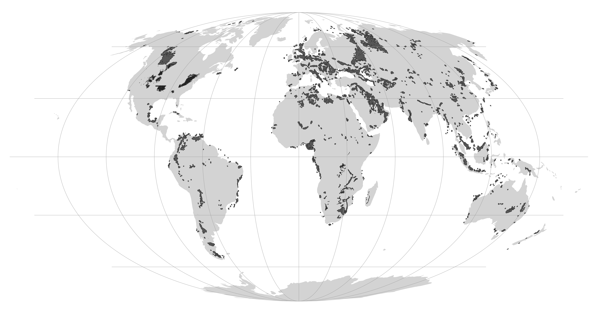
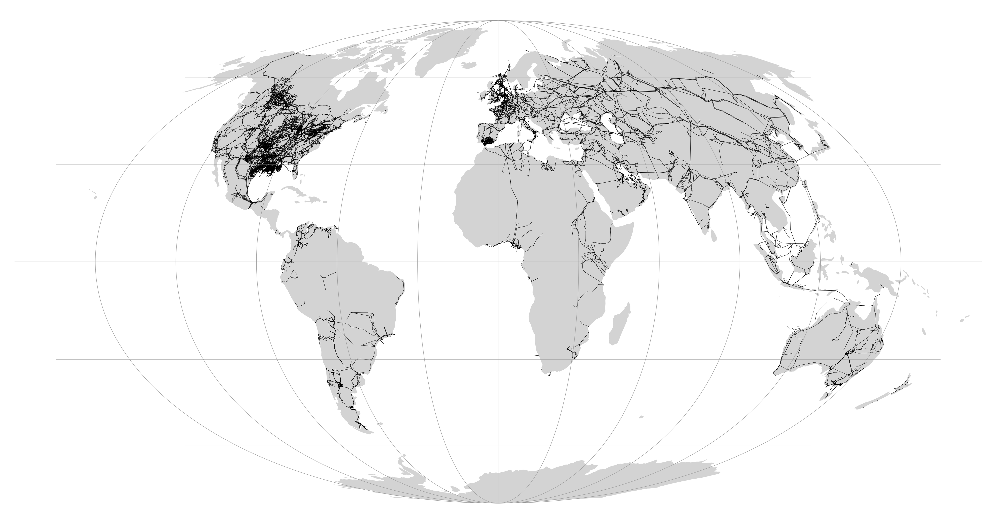
How does changing the temporal frame change our understanding of a place/system?
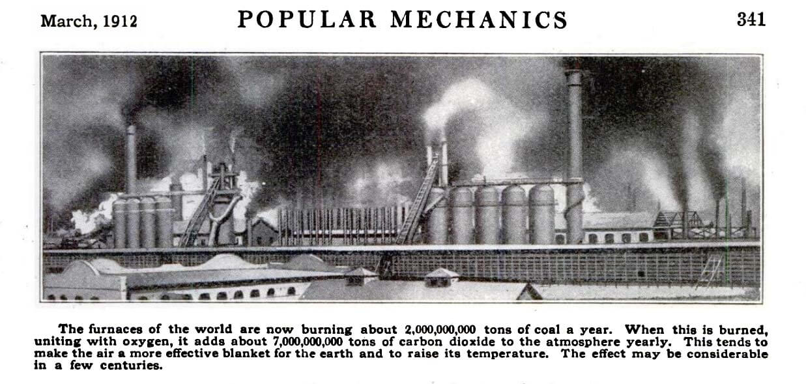
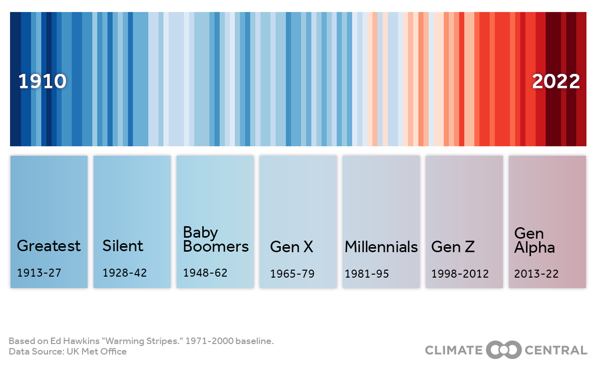
Note: Small Scale, Aggregation
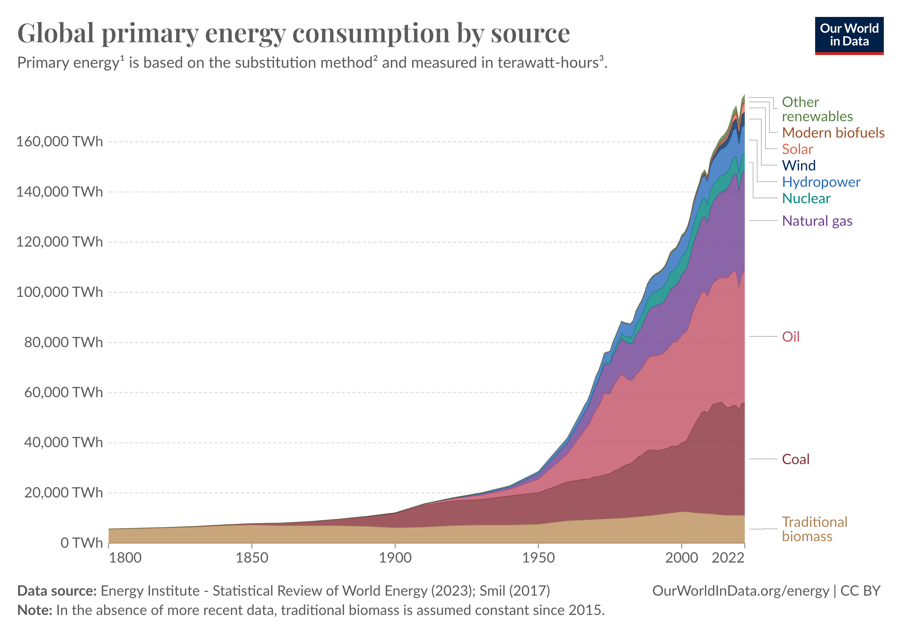
Source: Our World In Data
Source: 20th Century Standard Oil
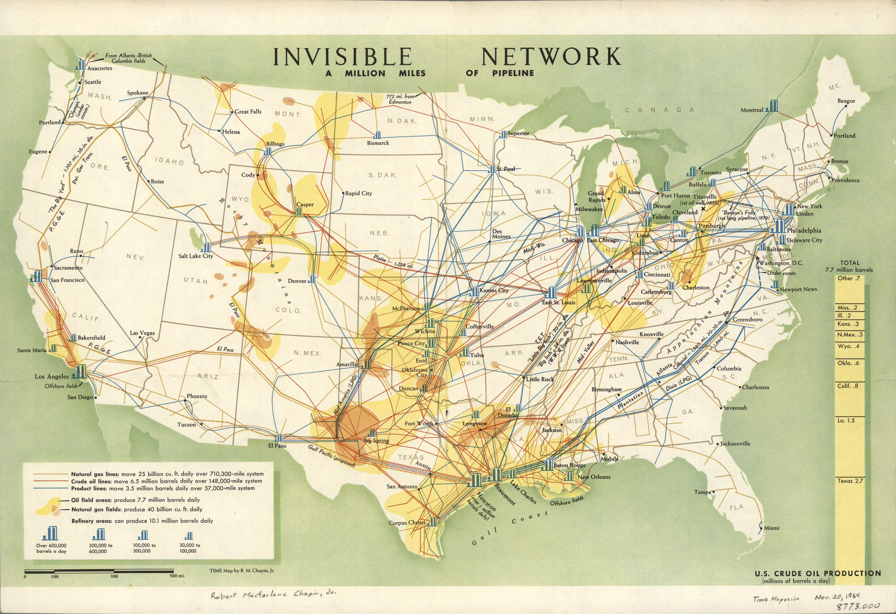
Source: Million Miles of Pipeline
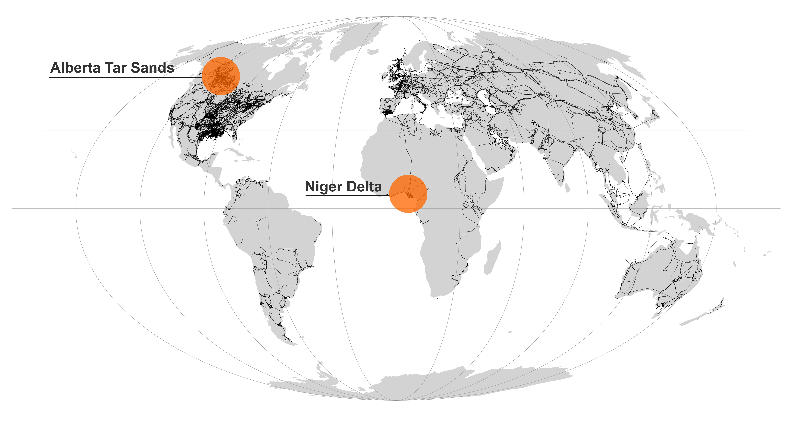
Source: Niger Delta - NASA
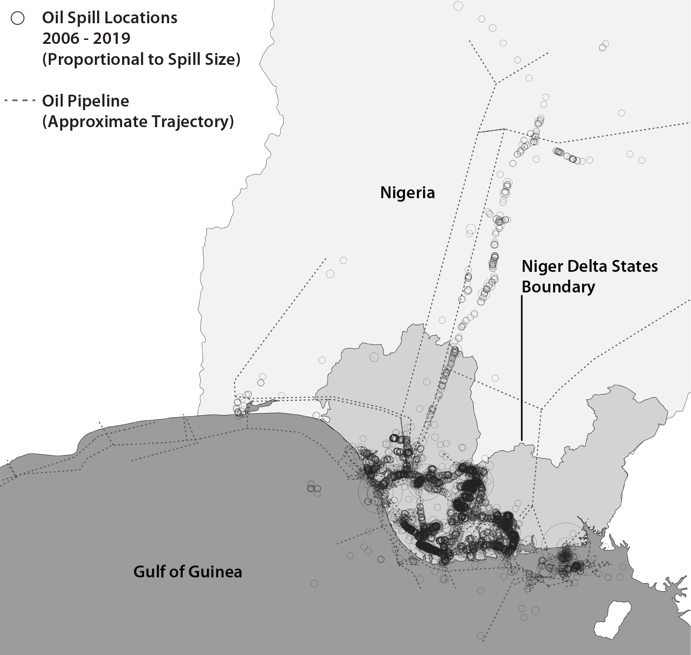
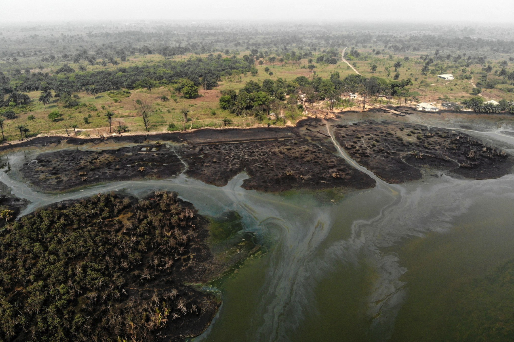
Source: Niger Delta Oil Impacts
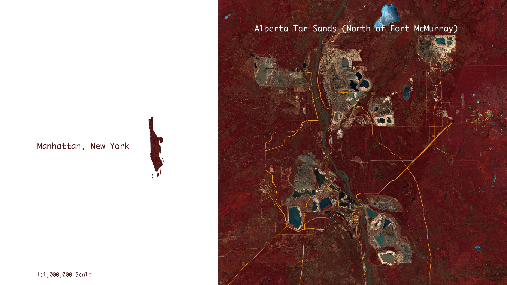
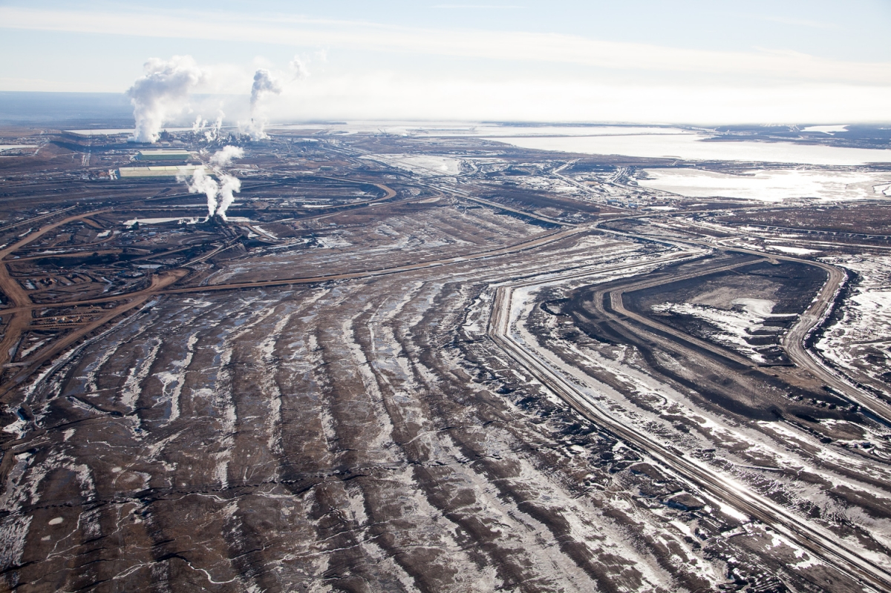
Source: Alex MacLean
Vast geographic network yet limited everyday visibility.
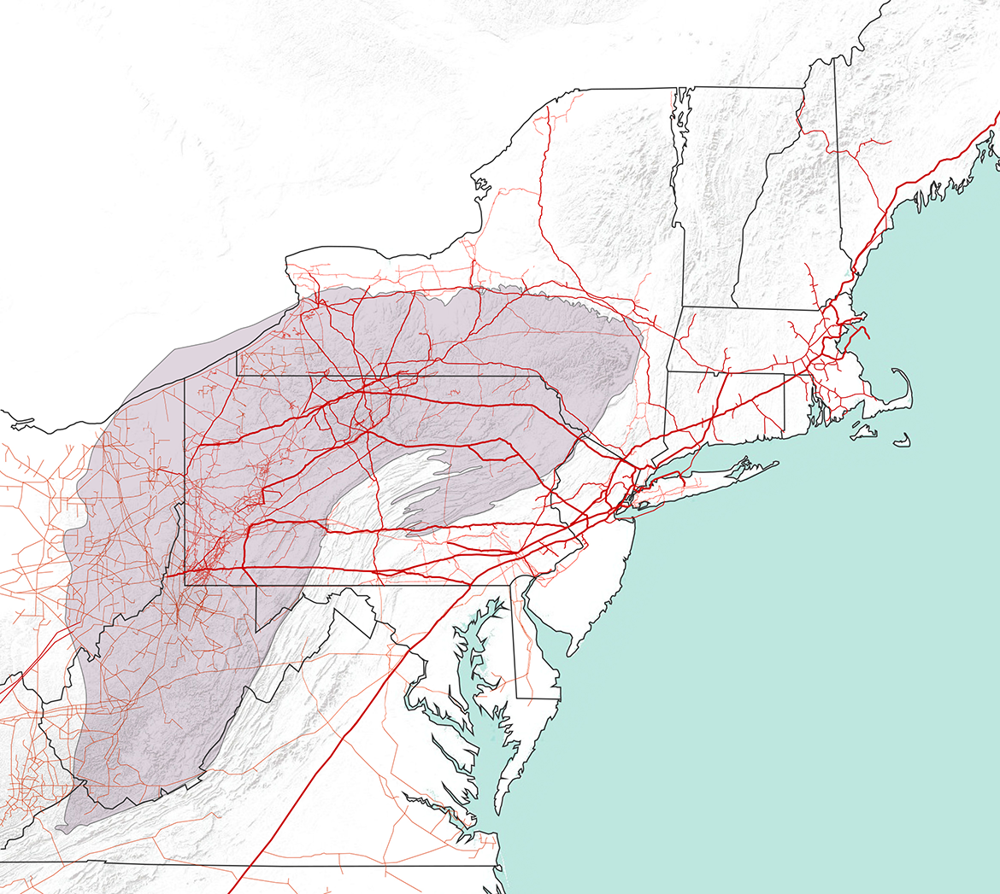
Source: Pipeline Territories
{kind=link}
{kind=link}